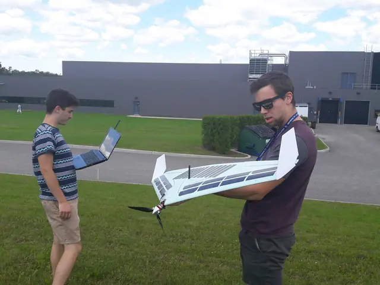
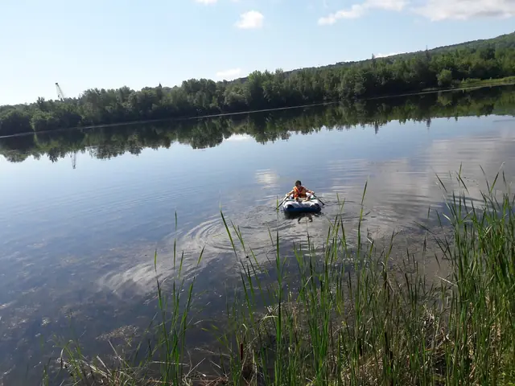
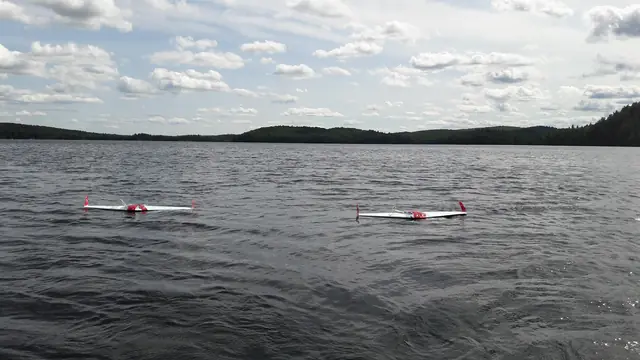
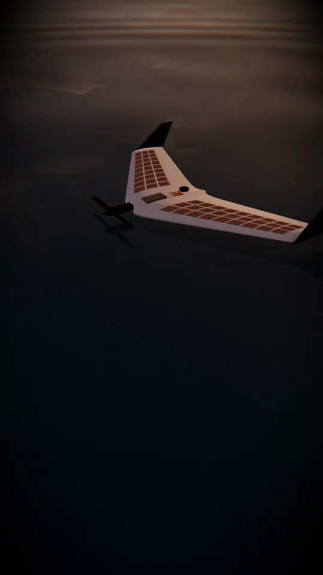

Stage · Sherbrooke, Québec · été 2017
prévoir la dérive
SUWAVE est un drone solaire qui se pose sur les lacs pour recharger ses batteries. Pendant mon stage, j'ai mesuré à quelle vitesse le vent le fait dériver et écrit le programme qui choisit où le poser pour qu'il reste sur l'eau pendant toute sa recharge.
- de la vitesse du vent
- 5%
- de recharge en plein soleil
- 3h
- essais de dérive sur lac
- 4
Le projet SUWAVE
Une aile volante qui se pose sur l'eau.
À l'Institut interdisciplinaire d'innovation technologique (3IT) de l'Université de Sherbrooke, l'équipe d'Alexis Lussier-Desbiens conçoit SUWAVE : une aile volante autonome, équipée de cellules solaires, capable de décoller d'un plan d'eau et de s'y poser.
Le problème
Pendant la recharge, le vent l'emporte.
Posée sur un lac, l'aile recharge ses batteries en 3 heures par ciel dégagé, bien plus longtemps sous les nuages. Pendant tout ce temps, le vent la pousse. Or un lac a des berges : échouée, ou immobilisée sous les arbres, l'aile ne peut plus ni se recharger ni redécoller.
L'histoire
Deux mois au Québec,
un lac à la fois.
À l'été 2017, élève ingénieur à l'École Centrale de Nantes, je rejoins Oneka Technologies, une jeune entreprise issue d'un projet étudiant de l'Université de Sherbrooke et installée au 3IT. Ses stations dessalent l'eau de mer grâce à l'énergie de la houle ; associées aux drones SUWAVE, elles pourraient aider les secours à reconnaître des îles dévastées par un ouragan.
Le scénario : lancées depuis un bateau, les ailes volent d'île en île, recueillent des images des dégâts et transmettent leurs données à une station. Quand une île est hors de portée d'une seule charge, elles se posent sur l'eau pour se recharger au soleil. Au Québec, le même drone pourrait sauter de lac en lac pour analyser l'eau ou surveiller les forêts.
Ma mission : étudier la dérive de ces ailes posées sur l'eau et trouver comment en limiter les effets. J'ai mesuré cette dérive au cours de quatre essais sur trois lacs, écrit un programme qui l'anticipe et conçu des prototypes pour la freiner.



Le film
Le projet en une minute
Neuf ans plus tard, l'aile reprend son vol. Les plans du lac, de l'aile et du décollage sont rendus depuis les scènes 3D de ce site ; les cartes rejouent les vraies traces GPS de 2017 et l'algorithme de dérive, pas à pas.

Dérive d'un drone solaire · 1 min
L'aile · 01
Taillée dans la mousse, au fil chaud
Richard-Alexandre Péloquin m'a montré le procédé de l'équipe : un panneau de mousse isolante, des profils en bois posés sur la tranche, et un fil métallique parcouru par un courant de 4 A sous 20 V, qui les suit en tranchant la mousse. Nous avons ainsi fabriqué trois ailes de dérive, de même géométrie que les modèles volants mais sans moteur ni hélice.
L'aile · 02
Un mètre d'envergure, des cellules solaires
Le modèle volant de l'équipe mesure un mètre d'envergure pour environ 700 g. En plein soleil, la version qui volait à mon arrivée se rechargeait en 3 heures. En veille, elle ne consomme presque rien et peut donc se recharger lentement, même par temps couvert.
L'aile · 03
L'électronique à bord
Un contrôleur de vol PixHawk sous PX4, une batterie LiPo, un GPS, une radio de télémétrie à 915 MHz et un interrupteur d'armement. Sur les ailes de dérive, un tube de Pitot devait mesurer le vent : grâce à ses ailettes, l'aile se place d'elle-même face au vent.
L'aile · 04
Redécoller depuis l'eau
Pour repartir, le moteur se redresse sur un pivot et l'aile décolle à la verticale. Ce mécanisme était le travail de Richard-Alexandre ; Étienne Tétreault améliorait le profil de l'aile et l'encapsulation des composants, Gabriel Guilmain programmait le décollage et l'atterrissage automatiques.
La dérive · 01
Le vent l'emporte, à 5 % de sa vitesse
Nous avons laissé dériver les ailes sur trois lacs en enregistrant leur position GPS chaque seconde. Même dans les lacs traversés par une rivière, le courant s'est révélé négligeable : l'aile part dans le sens du vent, à environ 5 % de sa vitesse. Ici, les trajectoires réelles de trois ailes sur le lac Montjoie, le 16 août 2017, par un vent d'environ 6 m/s.
La dérive · 02
Lire la prévision du vent
Mon programme téléchargeait les prévisions Windfinder de la station météo la plus proche, un vecteur de vent toutes les trois heures, et les enregistrait dans une base SQLite. Pour une recharge donnée, chaque vecteur est pondéré par le temps que l'aile passe sous son effet : la dérive prévue est la somme de 5 % × vent × durée.
d = Σ 0,05 · vi · Δti
La dérive · 03
Trouver la place sur le lac
Le projet GEGI, développé par d'anciens stagiaires, couvre le Québec d'un maillage de points GPS et indique, pour chacun, s'il se trouve dans un lac. À partir de ces points, le programme construit les plus grands rectangles d'eau libre (290 pour le lac Montjoie), puis retient celui qui contient le mieux le rectangle balayé par la dérive.
La dérive · 04
Se poser au vent, dériver à l'abri
La trajectoire est centrée dans ce rectangle : son point de départ, du côté d'où vient le vent, devient le point de pose. L'aile dérive alors à travers le lac pendant toute la recharge sans atteindre la berge. Si aucun rectangle n'est assez grand, le programme le signale : il faudra redécoller avant d'atteindre la berge, ou se repositionner sur le lac.
À vous de jouer
Choisissez le vent
L'algorithme de 2017, réécrit en JavaScript. Zones et prévisions viennent de sa base de données ; contours des lacs © OpenStreetMap.
L'ancre · 01
Freiner la dérive
Prévoir ne suffit pas toujours. J'ai aussi travaillé sur des solutions physiques : des ancres flottantes, des panneaux qui freinent l'aile en prenant appui sur l'eau, et des WaveGliders inspirés de celui de Liquid Robotics, qui transforment le mouvement vertical de la houle en déplacement horizontal. L'occasion d'apprendre à me servir de la découpeuse laser Trotec Speedy 300 et d'une imprimante 3D composite MarkForged.
L'ancre · 02
Imprimé, découpé, assemblé
Une ancre flottante doit pouvoir se ranger dans l'aile sans trop en dégrader l'aérodynamique. J'ai dessiné sous SolidWorks un système de déploiement à croisillons : sabot et axes imprimés en 3D, bras découpés au laser, arrêts en translation assurés par des goupilles en fil de fer. Les pièces affichées ici sont celles de 2017.
L'ancre · 03
Déployée en 30 secondes
Une vis sans fin entraînée par un servomoteur règle l'écart entre les deux axes supérieurs : toute la structure s'étend ou se replie, comme un miroir sur bras extensible à croisillons. Commandé par le contrôleur de vol grâce à mon application embarquée, le système déploie l'ancre en 30 secondes. Trop encombrant pour être intégré à l'aile, ce premier prototype a permis de tester le principe des croisillons.
Journal
Dix étapes,
du labo aux lacs.
Tirées de mon journal de bord, de mes rapports d'expérience et des données d'origine : les courbes sont tracées à partir des journaux GPS des ailes et du tableau des coefficients de 2017.
Résultats
Ce que les lacs
nous ont appris.
En deux mois : des mesures de terrain, un coefficient de dérive, un programme d'anticipation fonctionnel et plusieurs prototypes anti-dérive.
Vitesse de dérive et vitesse du vent
Chaque point est une session de dérive mesurée en 2017, d'après le tableau « Coefficients de déplacement ». Le vent n'était connu qu'au mètre par seconde près, par les stations Windfinder ou l'anémomètre : d'où les colonnes de points. La droite à 5 % résume les essais du 2 et du 16 août ; ceux du 29 août, par vent très faible, ont dérivé plus vite qu'elle ne le prévoit.
Garder le contact avec l'aile
Pour retrouver une aile au milieu d'un grand lac, il fallait savoir jusqu'où porte sa radio. Posée au sol, l'aile est vite hors de portée : l'eau et le sol obstruent la liaison. Un drone relais en vol stationnaire au-dessus de la station change tout.
Pourquoi des lacs
Du lac québécois
à l'archipel.
Un lac est une zone de dérive bornée : si l'aile sait y rester, on saura lui choisir en mer une zone sûre, près d'une station relais ou d'un point de repêchage.
Équipe et remerciements
Avec la légendaire
bienveillance canadienne.
SUWAVE est le projet de l'équipe d'Alexis Lussier-Desbiens au 3IT. Ce site raconte ma part du travail, l'étude de la dérive, menée avec l'aide précieuse de toutes ces personnes.